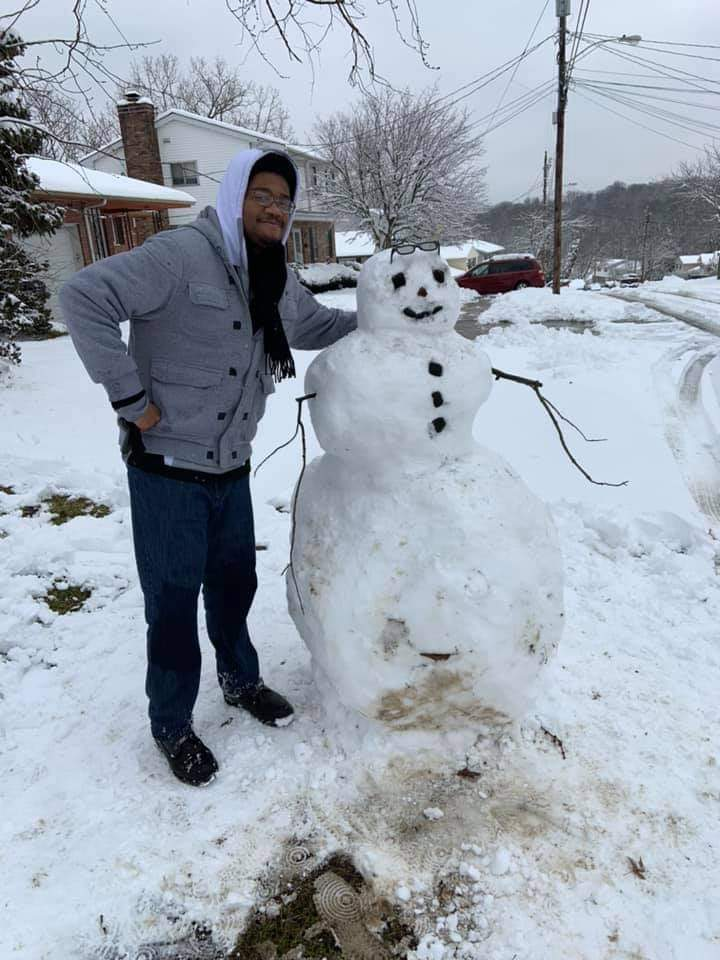
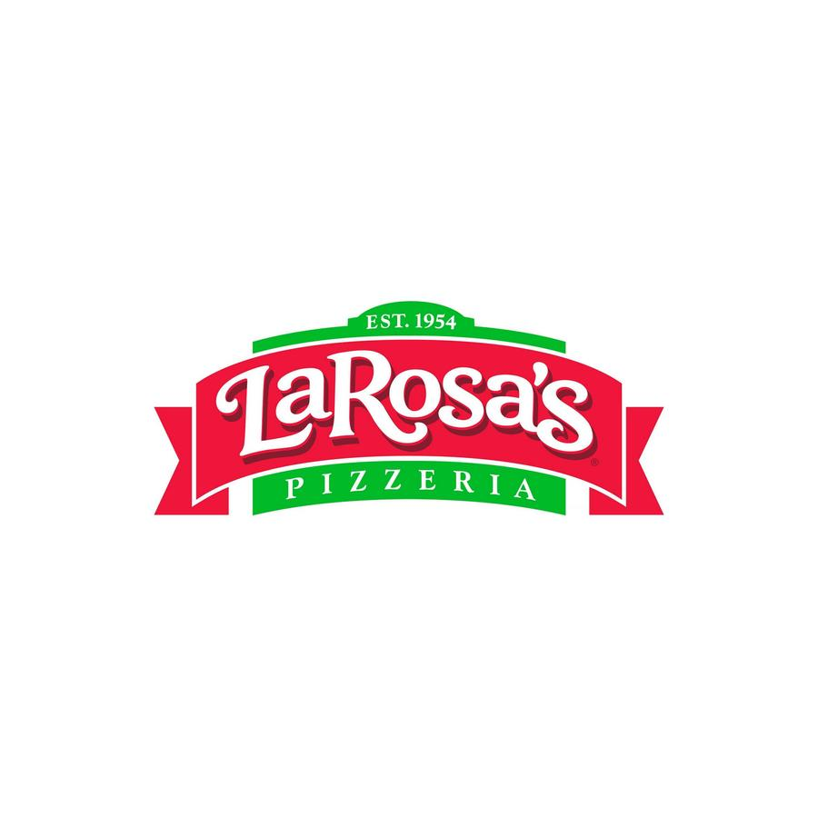
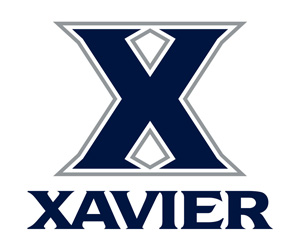
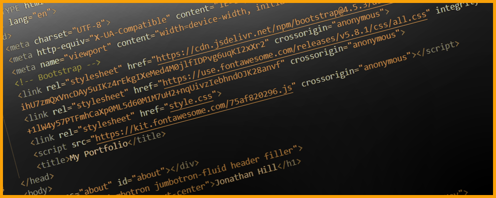
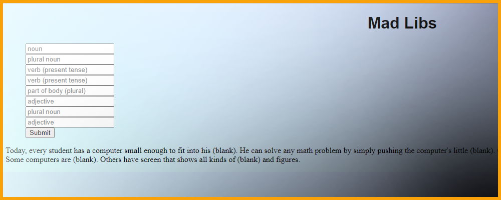

About Me
- 
Jonathan Hill
I lived in Cincinnati, Ohio since I was born. I'm a 20 year old graphic designer and website developer. I'm currently learning Web Development at Kable Academy.
Education

September 2021 - Current
I discovered Kable Academy through friends that either talked about it or went through the program themselves. I was teetering on the thought of jumping back into a class setting and learning Web Development. I love being able to make websites and design them while being able to show them off and let people know they are my own!
Kable Academy
August 2019 - May 2020
I majored in graphic design and took part in attending a Gamer's Club on campus. I learned HTML and CSS in a Web Design class I took my second semester up at Cincinnati State.
Cincinnati State
August 2015 - May 2019
DePaul Cristo Rey is a private Catholic school that prioritizes prepping students for college. DPCR also has a program that places students at different jobs around the area to give them work experience. I was awarded with "Perfect Attendance", "Second Honors", and multiple different work study programs awards. I also started a Game Club my freshman year where me and classmates would just play games, lay back, and have lots of fun!
DePaul Cristo Rey High School
Experience

September 2021 - Current
Working in the Outside Lawn and Garden department is somewhat physically demanding because of the heavy merchandise you have to load in vehicles or carts. This job has also shown me how to operate a forklift and be certified to use it at that store.
Lowe's
- 
September 2019 - April 2021
This job was a fast paced work environment where I had to multitask, be quick on my feet, and properly communicate throughout the entire shift. I also was assigned to stock the walk in freezer and the walk in cooler on certain days.
Larosa's
August 2018 - May 2019
I worked here as a student worker in the DePaul Cristo Rey High School corporate work study program. I learned and used Microsoft Excel in order to sort information and projects.
David J. Joseph Company
August 2017 - May 2018
I worked here as a student worker in the DePaul Cristo Rey High School corporate work study program. I was at the front desk taking calls and letting people into the office area.
Michelman
- 
August 2016 - May 2017
I worked here as a student worker in the DePaul Cristo Rey High School corporate work study program. I helped around the learning commons and student registrar by running office errands or entering in information in Microsoft Word or Excel.
Xavier University
Interests
My main interests are graphic design and web development!
Skills

After attending classes at Cincinnati State and Kable Academy, the coding languages I've learned are listed below
HTML5
CSS3
JavaScript
Projects
Here are some of the wonderful projects that I've taken time to code and create in classes or in my free time!
GitHub Overview

There are only a couple of projects that got some spotlight in this web page but you can find others that I haven't inserted into this web page HERE!
Hello World
September 27th 2021
Nothing too much to see here, just my first web page pushed to github. It's nice to see how far I've come when I compare every page I make now to the very first page I pushed! Click the picture above to open it in a new window!
About Me
September 29th 2021
This is a project where I experiment with having multiple pages link to each other. This is also the first project where I've implemented a lot of CSS into it. Click the picture above to open it in a new window!
Mad-Libs
October 1st 2021
A project where I messed around and linked JavaScript to the HTML. This is my first web development project where JavaScript plays a big role, resulting in the web page's content being very interactive! Click the picture above to open it in a new window!
Product Landing Page
October 4th 2021
A project where I created a fixed navigation bar and added a embed YouTube video onto the HTML file. Click the picture above to open it in a new window!